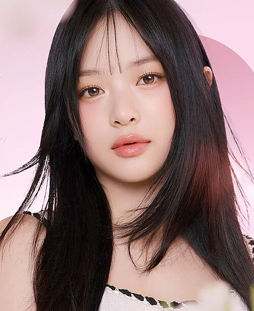
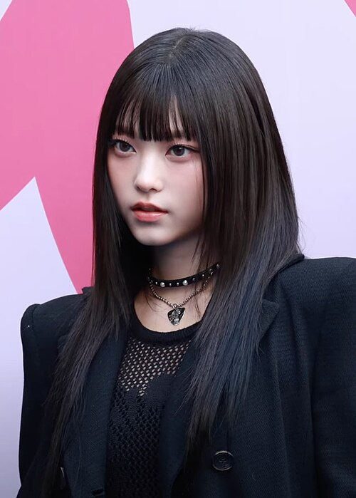
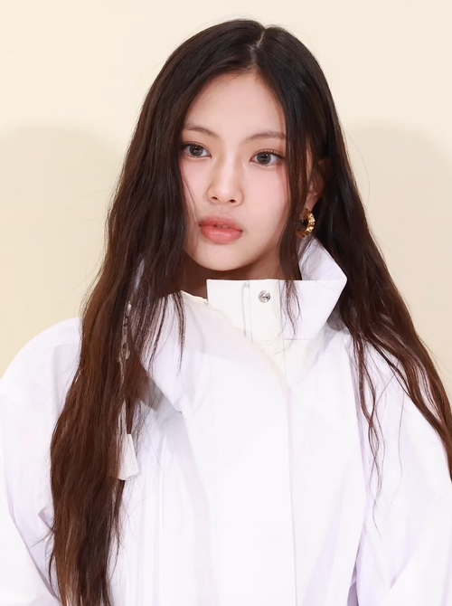

NewJeans
NewJeans (hangul: 뉴진스; rr: Nyujinseu), também conhecido como NJZ (hangul: 엔제이지; rr: enjeiji), é um girl group sul-coreano. O grupo é composto por cinco integrantes: Minji, Hanni, Danielle, Haerin e Hyein. Foi formado pela ADOR, uma subsidiária da Hybe Corporation, e pré-lançou seu single de estreia "Attention" em 22 de julho de 2022. Este precedeu seu extended play epônimo de estreia, lançado em 1 de agosto de 2022. No dia 23 de março de 2025, o grupo fez o seu re-debut oficial como NJZ, após se apresentar como cabeça de cartaz no festival ComplexCon Hong Kong.
Nome
EO nome do grupo, NewJeans, é um duplo sentido. Faz alusão à ideia de que o jeans é um item de moda atemporal e a intenção do grupo é de esculpir uma imagem atemporal para si. O nome também é um jogo de palavras com a frase "novos genes", que em inglês "new genes" tem pronúncia parecida, referindo-se ao grupo que inaugura uma nova geração de música pop
História
Pré-estreia
Os preparativos para um novo girl group estrear sob a Big Hit Entertainment começaram em 2019 sob a direção de Min Hee-jin, que ingressou na empresa como CMO no mesmo ano e é amplamente reconhecida por sua direção de arte como diretora visual da SM Entertainment. As audições globais ocorreram entre setembro e outubro de 2019, e o elenco do grupo começou no início de 2020. Apelidado de "Girl Group da Min Hee-jin" por vários meios de comunicação, o grupo foi originalmente programado para ser lançado em 2021 como um projeto colaborativo entre Big Hit e Source Music, mas foi posteriormente adiado devido à pandemia de COVID-19. No final de 2021, o projeto mudou para a recém-criada gravadora independente ADOR da Hybe, depois que Min foi nomeada CEO da gravadora. Uma segunda rodada de audições globais foi realizada entre dezembro de 2021 e janeiro de 2022, e a formação do grupo foi finalizada em março de 2022.
Antes de estrear com o NewJeans, vários membros do grupo já atuavam na indústria do entretenimento. Danielle era um membro regular do elenco do Rainbow Kindergarten da tvN, um programa de variedades que foi ao ar em 2011. Hyein estreou como membro do grupo musical infantil Usso Girl em novembro de 2017 sob o nome artístico de U.Jeong, antes de sair do grupo um ano depois. Em dezembro de 2020, ela estreou novamente como membro do grupo musical e coletivo do YouTube Play With Me Club via PocketTV, e se formou no grupo em 3 de maio de 2021. Hanni e Minji fizeram aparições no videoclipe de 2021 "Permission to Dance" de BTS.
integrantes
-
Minji (hangul: 민지) nascida Kim Minji (김민지) em 7 de maio de 2004 (21 anos) – líder. Ela nasceu em Chuncheon, Gangwon, Coreia do Sul.
- 
Hanni (hangul: 하니) nascida Hanni Pham em 6 de outubro de 2004 (20 anos) – vocalista, dançarina. Ela nasceu em Melbourne, Victoria, Austrália.
-
Danielle (hangul: 다니엘) nascida Danielle Marsh em 11 de abril de 2005 (20 anos) – vocalista, dançarina. Ela nasceu em Munsan, Paju, Gyeonggi-do, Coreia do Sul.
- 
Haerin (hangul: 해린) nascida Kang Haerin (강해린) em 15 de maio de 2006 (19 anos) – vocalista. Ela nasceu em Pyeongchon, Dongan-gu, Anyang, Gyeonggi-do, Coreia do Sul.
- 
Hyein (hangul: 혜인) nascida Lee Hyein (이혜인) em 21 de abril de 2008 (17 anos) – vocalista, maknae. Ela nasceu em Incheon, Coreia do Sul.